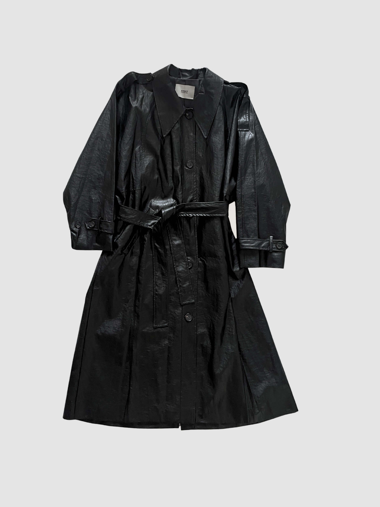
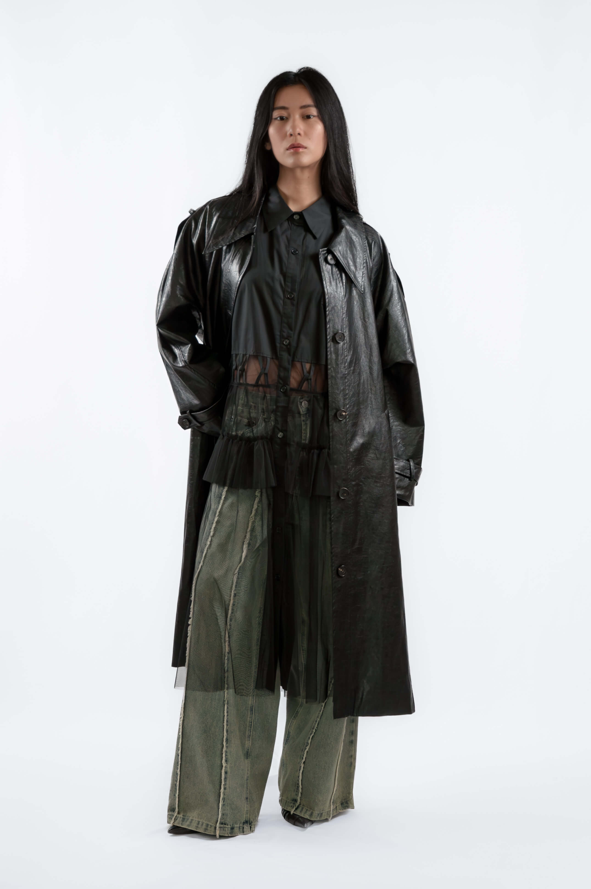

What to Wear in Berlin: A Minimalist Style Guide
Not the polished formality of Paris or the studied casualness of London; something quieter. Berlin has its own register: structure, function, and restraint. Clothes that hold across a full day without announcing themselves. This guide covers the core decisions for building a wardrobe that works in this city.
What to wear in Berlin in 2026: layering, colour, footwear, and two pieces from einHaru Collective that earn their place.

The Berlin Register: What the City Actually Wears
Berlin style is not about fashion in the traditional sense. It favours clothes that last, that carry well across contexts, and that do not try too hard. The aesthetic leans structural: clear silhouettes, considered fabric choices, and a quiet confidence that does not need to be announced.
The reference point is not a single look but a set of values: functional but not utilitarian, minimal but not stark, considered but not precious. Getting this right usually means buying fewer pieces and choosing them more carefully.
Layering: One Outer Piece That Works Across Contexts

Berlin weather moves quickly, particularly between seasons. An outer piece becomes part of the daily equation nine months of the year. The practical logic: one coat that works across contexts is more useful than several that do not overlap.
The elongated silhouette of a structured trench holds over almost everything in a minimal wardrobe. It resolves layering decisions rather than creating new ones. Choose a length that reads deliberate: mid-thigh or longer preserves the shape of what you wear underneath.
Colour: Build on Black, Add One Considered Tone
Berlin defaults to black; not as a statement, but as an absence of distraction. It requires no co-ordination decisions, photographs well in flat northern light, and wears without drawing attention to itself.
If you add a second tone, add one. An earthy brown, a muted olive, or an off-white worn against black creates enough contrast without competing with the silhouette. Resolve the palette before you get dressed, not while you are dressing.
Avoid introducing a third colour until the base two read as clearly intentional. One unresolved colour reads as a mistake; two reads as indecision.
Footwear: Grounded, Functional, Deliberate
Berlin involves walking. Footwear that looks considered but functions poorly tends not to survive the first week. The practical range: a clean leather shoe with a slight sole, a minimal trainer, or a low-profile boot.
Wide leg silhouettes need visual grounding at the ankle. A shoe with some substance (a slight sole height, a block structure, a defined edge) holds the proportion. Delicate footwear disappears under wide hems and leaves the base of the outfit unresolved.
For cropped lengths, flat options work well. For full-length trousers, something with a lifted or structured sole closes the silhouette properly.
Shop: Two Pieces for Berlin Daily Wear
Two pieces currently available at einHaru that work well together and independently for Berlin daily wear.

Beaker Pants, Londonflat
A barrel-shaped wide leg trouser in a clean, structured fabric. The volume sits through the thigh and tapers slightly at the hem: a grounded silhouette rather than a swept-out one. Works with fitted tops and a single outer layer. Available in the current edit at einHaru Collective.
View productVegan Leather Glossy Trench Coat, Commonrare
An elongated structured trench in glossy vegan leather. The silhouette reads as precise without being formal; the single-colour black holds across every context it enters. One size fits EU 34 to 40. Made in Korea.
View productContinue reading: How to Style Wide Leg Trousers or The Best Independent Fashion Boutiques in Berlin.